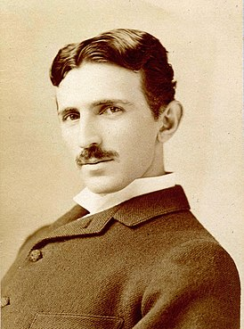

 Никола Те́сла (серб. Никóла[источник не указан 45 дней] Те́сла, англ. Nikola Tesla; род. 10 июля 1856, Смилян, Госпич, Австрийская империя — 7 января 1943, Нью-Йорк, Нью-Йорк, США) — изобретатель в области электротехники и радиотехники сербского происхождения, учёный, инженер, физик. Родился в Австрийской империи, вырос в Австро-Венгрии, в последующие годы в основном работал во Франции и США. В 1891 году получил гражданство США[8]. Широко известен благодаря своему вкладу в создание устройств, работающих на переменном токе, многофазных систем, синхронного генератора и асинхронного электродвигателя, позволивших совершить так называемый второй этап промышленной революции. Также он известен как сторонник теории о существовании эфира — благодаря своим многочисленным опытам и экспериментам, имевшим целью показать наличие эфира как особой формы материи, поддающейся использованию в технике. Именем изобретателя названа единица измерения плотности магнитного потока (магнитной индукции). Среди многих наград учёного — медали Эллиота Крессона, Джона Скотта, Томаса Эдисона. Современники-биографы считают Теслу «человеком, который изобрёл XX век»[9] и «святым заступником» современного электричества[10]. После демонстрации радио и победы в «Войне токов» Тесла получил повсеместное признание как выдающийся инженер-электротехник и изобретатель. Ранние работы Теслы проложили путь современной электротехнике, его открытия раннего периода имели инновационное значение. В США по известности Тесла мог конкурировать с любым изобретателем или учёным в истории, а также в массовой культуре[11].